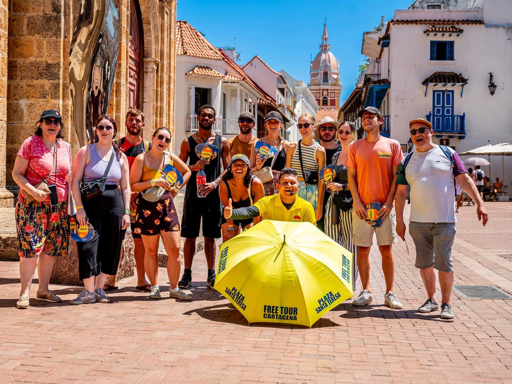

Old City Free Walking Tour
Visitaremos los principales lugares de interés del Corralito de Piedra en Cartagena, para que conozcas y disfrutes la historia de Cartagena…
Este es un recorrido panorámico a pie en el que, en lugar de visitar museos, nos sumergiremos en la esencia de la ciudad. Comenzamos en la Plaza Santa Teresa con una introducción a la historia de Cartagena, para luego recorrer lugares emblemáticos como la Plaza San Pedro Claver, la Plaza de la Aduana, la mítica Torre del Reloj y la Plaza de la Proclamación. También visitaremos la Catedral de Santa Catalina, el Parque Simón Bolívar y las icónicas plazas de Santo Domingo y de la Merced, conociendo los secretos que guarda cada rincón del Corralito de Piedra.
- Punto de Encuentro: Plaza Santa Teresa
- Salidas: Todos los días
- Horario: 10:00 a.m.
- Idioma: Español/Inglés
- Duración: 2 horas